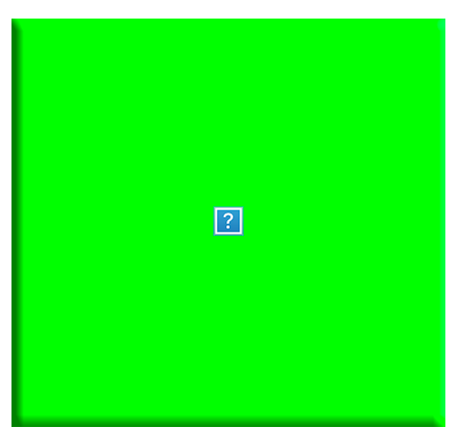
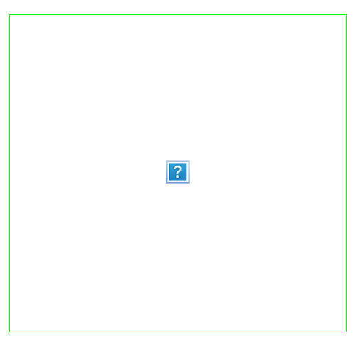

My body is my gender playground, where I sometimes mix elements of the two sexes which seem to be the 'standard equipment' of western society. Beard+tits, smoking+diadem is my standard equipment! Yeah!
I know I'm supposed to love and worship my body as if it were a temple, but every day I wish I had a better one.

SHUTTED BY THE VIEWS

It is not possible to insist any more on a dualism of body and mind.
The body speaks by itself and tells us more than we are ready to understand. Bodies are constructs in the way we deal with them and have their histories. These histories are interventions with, on and through bodies.If I am interested in the body is when the body thinks and speaks by itself.
It’s hard to identify with female or male roles, when I just want to play my own role.
I am loosing my body, dissolving in cyber space.
I’m a man, I'm a woman. I'm another idealized body.
MY BODY IS MINE
What if my body isn't functioning in the way it is intended?
My Concrete Body - Poem
Body - Sometimes immanent materiality of being;
Other times, transcendent - rubber and bird raising flight,
Searching the Sun and a brunette skin, which fits so good.
Even at the age of 56.
My body is just a visible object covered by fashion industry.
My body?
Me but always different!
In my opinion, the worst identification for women is the Barbie doll and it could also be a reason for anorexia.
My body in paintings is a means for me to show the grief/sorrow and human-ness of our lives.
My lungs were enslaved for 25 years to capitalist death dealers - just now, I am celebrating my recent liberation from smoking, while wistfully missing my old masters.
My body is a marionette.
I barely ever pull the strings.
ALL OF MY LIFE
I HAVE DREAMED
TO WEAR FUR
INSTEAD OF SKIN
Two eggs, without one gram of male genius.
My body is made of love and hate,
my body is soft and tender,
but it can be loud as a thunder.
My body is a temple
maybe you can enter.
My body is a flower,
my body is a stone,
my body is made of blood and bones.
My body is nobody's
neither mine.
My body is a gift
and is made of this.
My body: precious.
My one and only fe/male car,
I am ever driving: love it
like it share it with me.
Listen ...
in cyberspace I am
dis [em]body
or dat[a] body
dis image is one of dem
I can be any
of many
IT HURTS ME
My body is what I really am.
a female body . . . . became more and more an object than something human ... how should a body look like? and why dont we give a damn about what others think, our body should look like? are we so much self-inconfident? where is our strength? I am fed up with trying to be perfect and to have the perfect figure, just always this disgusting pressure . . . . I really came to a conclusion I swear, from now on I will always follow this one: I JUST LOVE MYSELF!!!!
By using myself as a character for a painting I am also asking what it would be like to be in one of Velasquez's, notably "The Rokeby Venus" also called "Venus at Her Mirror" (and other paintings like Courbet's "Woman With a Parrot") and to consider their sensuality and pose the question: "What does this mean in the context of our time?”
When I was young, my grandmother taught me to be proud of not being beautiful, proud to be intelligent and independent instead. Now I sometimes have the feeling I might have missed something, that feeling beautiful might have been fun. But now I am old, and my grandmother died before she could teach me how to be a proud old woman, so I am looking for other teachers.
My organs of touch are my eyes, these are the central points of meeting, to see, to perceive, and to become aware of and to be recognized as well.
Let me pay for dinner once or twice or every time. Don't loan me money. Don't worry about me so much. I may have curves. I may bleed once a month. I may bat my eyes and swish my hips. But I'm not that fragile. I'm not that weak. Hold my hand and say you love me. But let me be me and let me be independent.
My body doesn't work very well, but I think it's beautiful.
My body is a wonderful home. Once debased by sexual abuse I was ashamed of it, but now I view my body as a gift. Through dancing as means of expression I received my dignity and my body back.
POWER CONTROL BY
USING MALE PRIVILEGE
INTIMIDATION
ISOLATION
EMOTIONAL ABUSE
ECONOMIC ABUSE
SEXUAL ABUSE
PHYSICAL ABUSE
THREATS
USING CHILDREN
Do people see through me?
Who do they see?
Do they see me as present,
past or future?
For me the inside of the body is at the moment more important than the outside, because I am responsible to take care about what is happening inside.
Women who don't understand their own beauty live in the
shade of dark …
I dream to meet me. In this gap between me and a collective me, I'm acting me in the aether.
Most body pains are of
psychic nature.
I think my body is so good like
I have to care for.
my body is my temple.
I should take care of it, but there is a power inside of me that is trying to destroy it. to punish and suppress. tomorrow I will start all over again loving myself. tomorrow.
In this life you cant leave your body, even if you would like to.
When I am sick, I am aware of my body, otherwise not. Otherwise I feel my body as a surface for interacting, something vulnerable, something which is visible for other people and to judge about.
My body in the public is not female. It is something in between, or which is appreciated. I do not notice the switching when I am in action, but afterwards in privacy I lay back and feel female again.
My body is part of my identity. It sets of values, attitudes, ways of expression, symbols and signs.
My body, like others, is measurable, it's defined by me but is constantly pressured by culture. If I don't "play according" to the cultural normatives I get segregated by specific social groups, but I find others that share my values, so it's OK.
Manipulation Fear uses my body as an object that is the victim of abuse. I titled this painting Manipulation/Fear. Leni Riefenstahl's photo of Hitler's mass rally and a detail from a still based on the film Cape Fear with Robert De Niro seem to be tattooed upon and through my body.
I is body,
boldly can I claim -
this body,
here...
where there's no-body...
but this matter
Only after I discovered that beauty wasn't necessary did I realize that I am, after all, beautiful.